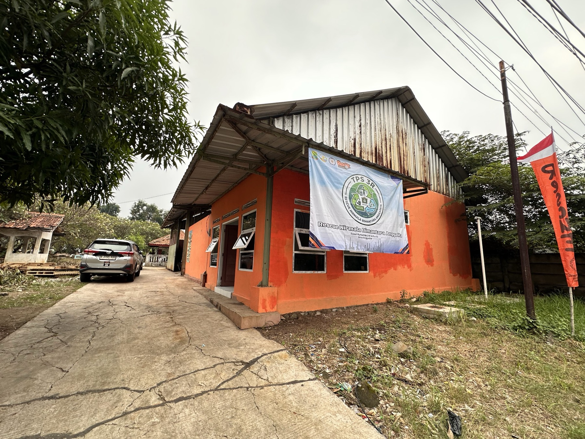
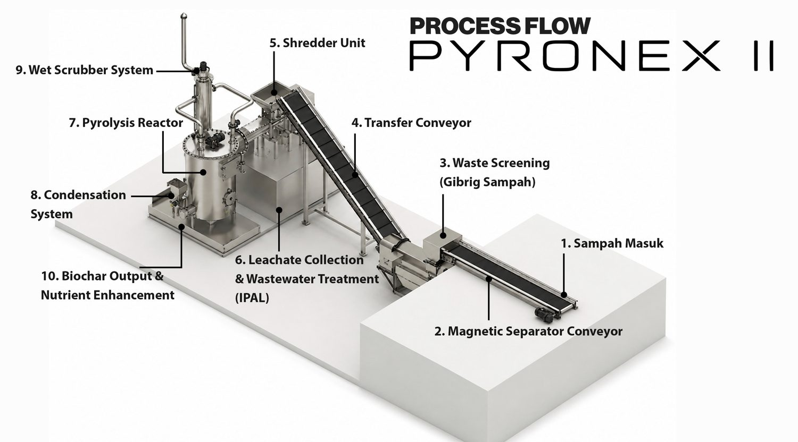

Pengembangan fasilitas pengolahan sampah di Desa Anggadita
Proposal investasi untuk meningkatkan TPS3R yang telah beroperasi dari fasilitas pemilahan manual menjadi fasilitas pengolahan dengan kapasitas teknis hingga 8 ton per hari.
Lihat kebutuhan investasiKonteks Lokasi & Status Proyek
Investasi ini diarahkan untuk mengembangkan TPS3R yang telah beroperasi di Desa Anggadita dan memiliki kegiatan pengelolaan sampah yang berjalan.

Operasi saat ini masih berfokus pada pemilahan manual material ekonomis, seperti botol, besi, dan material daur ulang lainnya. Sekitar 90% sampah yang masuk masih diangkut kembali ke TPA.
SK dari DLH tersedia sebagai bagian dari dokumen pendukung proyek.
SK dan dukungan Desa Anggadita tersedia.
Pemerintah Desa dan pemilik lahan menjadi bagian dari kesiapan lokasi.
TPS3R telah berjalan dan akan ditingkatkan kapasitas pengolahannya.
Investasi ditujukan untuk mengubah fungsi TPS3R dari titik pemilahan manual menjadi fasilitas pengolahan sampah di lokasi.
Tantangan Problematika Sampah Lokal & Nasional
Kebutuhan fasilitas pengolahan di Anggadita berada di dalam persoalan yang lebih besar: kapasitas layanan belum sebanding dengan timbulan sampah, sementara sebagian besar aliran masih berakhir di TPA atau belum tertangani.
Sampah tidak terkelola pada data 206 kabupaten/kota yang masuk ke dashboard SIPSN.
Ton per tahun tercatat masuk ke TPA dengan sistem open dumping pada data input 2025.
Ton per hari timbulan sampah Kabupaten Karawang yang tersebar di 30 kecamatan.
| Aliran sampah Karawang | Ton/hari | Keterangan |
|---|---|---|
| Terolah di sumber dan fasilitas | 68,15 | Sudah masuk proses pengolahan |
| Terangkut ke TPA Jalupang | 378,34 | Masih bergantung pada pemrosesan akhir |
| Belum terangkut | 662,11 | Berpotensi terbuang liar ke lingkungan |
| Total timbulan | 1.108,60 | Cakupan layanan baru 17 dari 30 kecamatan |
TPA Jalupang dilaporkan telah menampung sekitar 1,2 juta ton dengan penambahan rata-rata 1.360 ton per hari.
Data Pemkab menunjukkan pelayanan persampahan baru menjangkau sekitar 56,67% wilayah kecamatan.
Lokasi di sekitar kawasan industri membutuhkan jalur pengolahan yang menyelesaikan sampah lebih dekat dari sumber.
Surat Edaran Hari Peduli Sampah Nasional 2025 mencatat estimasi timbulan nasional tahun 2023 sebesar 56,63 juta ton per tahun; 60,99% disebut belum dikelola dan 306 daerah masih menggunakan sistem open dumping. Cakupan setiap dataset berbeda, tetapi arahnya sama: kapasitas pengolahan di hulu perlu diperkuat.
Sumber: SIPSN — Capaian Kinerja Pengelolaan Sampah (input 206 kabupaten/kota, 2025); SE HPSN 2025; Pemkab Karawang, 22 Juni 2026.
Filosofi & Prospektus Anggadita
Proyek ini berangkat dari kebutuhan untuk menyelesaikan sampah lebih dekat dengan sumbernya, terutama pada wilayah dengan aktivitas industri dan komersial.
Sampah tidak hanya dipindahkan dari TPS ke TPA. Sampah perlu ditimbang, dipilah, dan diolah di hulu dengan pencatatan yang dapat dipertanggungjawabkan.
- Lokasi strategis. Desa Anggadita berada di sekitar wilayah industri dan bersebelahan dengan kawasan industri Karawang Timur.
- Kebutuhan pengolahan lokal. Pelaku industri dan komersial memerlukan jalur pengelolaan sampah yang lebih dekat, tercatat, dan dapat dipantau.
- Kondisi saat ini. Banyak fasilitas masih berfungsi sebagai titik transit; sampah yang sudah dikumpulkan tetap diangkut kembali ke TPA.
- Peluang proyek. TPS3R Anggadita telah memiliki kegiatan operasional, dukungan lokasi, dan dasar kelembagaan untuk dikembangkan menjadi fasilitas pengolahan.
Target penanganan hingga 95% berlaku untuk material yang sesuai dengan spesifikasi sistem. B3, kasur, sofa, dan material lain yang tidak dapat diproses melalui mesin dikelola melalui jalur terpisah.
Model Kelembagaan & Operasi
Proyek menggabungkan pengelola lokal, KSO manajemen operasional, DLH, Pemerintah Desa, pemilik lahan, investor, mitra teknologi, sumber volume, dan sistem data dalam satu tata kelola yang terkoordinasi.
Garis pengelolaan, teknologi, pendanaan, pengawasan, input, dan keluaran disusun dalam satu peta kerja.
DLH Kabupaten Karawang
Memberikan dasar penugasan, koordinasi layanan, dan konteks pengembangan jaringan.
→ penugasan · koordinasiPemerintah Desa & Pemilik Lahan
Mendukung kesiapan lokasi, hubungan lokal, dan penggunaan lahan sesuai dokumen kerja sama.
→ lokasi · dukungan lokal17 TPS di Kabupaten Karawang
Jumlah TPS di wilayah kabupaten sebagai konteks jaringan dan peluang koordinasi lanjutan.
→ konteks skala wilayahTPS3R Rescue Nirmala Anggadita
Unit utama pengolahan dan pusat manfaat proyek, dengan satu TPS Jabar dalam koordinasi pengelola.
Karang Taruna Kabupaten Karawang
Mengelola TPS3R Anggadita dan satu TPS Jabar serta menjadi penghubung kelembagaan lokal.
↓ pengelolaan lokal · hubungan kelembagaan1 TPS Jabar
Dikelola bersamaan dalam kerangka operasi dan koordinasi pengelola.
→ operasi paralel · koordinasiKibar Laksana Bintang
Mendukung operasi melalui manajemen SDM, SOP, keuangan, operasi, dan ERP cloud.
Investor Proyek
Menyediakan CAPEX dan mengawasi kinerja, laporan, serta keputusan strategis.
↕ pengawasan · laporan · koordinasi dengan KSOLestari Bumi Sembada
Mendukung teknologi proses, instalasi, pelatihan, commissioning, dan pemeliharaan teknis.
→ teknologi proses · maintenanceERP Berbasis Cloud
Mencatat data SDM, volume, biaya, operasi, dan laporan dengan jejak audit yang dapat dipantau.
→ dashboard · laporan · audit trailIndustri, komersial, residensial, serta pengangkut menyediakan volume dan jadwal layanan yang tercatat.
Kayu tebangan dan pemangkasan DLH diolah menjadi wood pellet sebagai bahan bakar internal TPS3R, bukan untuk offtaker.
Produk hasil pengolahan lain diarahkan kepada offtaker sesuai spesifikasi, hasil validasi, dan kesepakatan komersial.
Karang Taruna Kabupaten Karawang
Mengelola TPS3R Rescue Nirmala Anggadita dan satu TPS Jabar serta menjadi penghubung kelembagaan lokal.
Kibar Laksana Bintang
Mengelola SDM, SOP, keuangan, operasi, pelaporan, dan ERP cloud untuk mendukung operasi yang sustain dan transparan.
TPS3R Anggadita & 1 TPS Jabar
Menjalankan penimbangan, pemilahan, pengolahan, pencatatan, dan pengelolaan residu sesuai standar operasi.
Pemerintah Desa & Pemilik Lahan
Mendukung lokasi implementasi sesuai dokumen dan kerja sama yang tersedia.
Lestari Bumi Sembada
Menyediakan dukungan teknologi proses, instalasi, pelatihan, commissioning, dan pemeliharaan teknis.
Investor proyek
Menyediakan kebutuhan investasi awal serta melakukan pengawasan dan koordinasi atas keputusan strategis.
ERP Berbasis Cloud
Menyediakan data operasi dan keuangan yang terdokumentasi, terkontrol, dan dapat ditinjau sesuai hak akses.
Industri, komersial, dan residensial
Menjadi sumber volume sampah dengan struktur biaya layanan yang berbeda.
Teknologi & Alur Pemrosesan
Pyronex II digunakan sebagai sistem pengolahan termal untuk meningkatkan kapasitas TPS3R dan mengurangi volume sampah yang perlu diangkut ke TPA.

Alur pemrosesan 10 tahap
Target 95% menunjukkan porsi sampah yang dapat ditangani melalui rangkaian sistem. Material di luar spesifikasi mesin tetap dicatat dan dikelola melalui jalur yang sesuai.
Kebutuhan Investasi, OPEX & Pengelolaan Keuangan
Kebutuhan investasi awal mencakup mesin, fasilitas penimbangan, modal operasional awal, APD, perlengkapan operasional, dashboard pemantauan, dan administrasi proyek.
| Komponen | Nilai | Keterangan |
|---|---|---|
| Mesin Pyronex II | 1.500.000.000 | Set lengkap dan pekerjaan sipil sederhana |
| Jembatan timbang | 100.000.000 | Penimbangan dan pencatatan volume |
| Modal operasional tiga bulan pertama | 50.000.000 | Cadangan awal kegiatan operasi |
| Perlengkapan operasional dan administrasi proyek | 50.000.000 | APD, perlengkapan kerja, dashboard pemantauan, dan administrasi proyek |
| Total kebutuhan investasi awal | 1.700.000.000 | Basis kebutuhan pendanaan proyek |
OPEX indikatif bulanan
| Komponen | Biaya/bulan (Rp) | Basis kerja |
|---|---|---|
| Tenaga kerja | 7.500.000 | 3 operator |
| Listrik | 2.780.400 | ±66,2 kWh/hari |
| Wood pellet | 4.604.640 | ±95,93 kg/hari |
| Mikrobakteri dan bahan habis pakai | 300.000 | Konsumabel proses |
| Total OPEX indikatif | 15.185.040 | Belum termasuk sewa lahan |
OPEX merupakan asumsi kerja dari draft teknis untuk operasi 8 jam per hari dan 25 hari kerja. Nilai final perlu divalidasi melalui spesifikasi vendor, tarif energi, jadwal operasi, dan kondisi lokasi.
Prioritas sumber penerimaan
Biaya layanan pengolahan
Tipping fee dari volume non-residensial menjadi dasar pengembalian modal. Penjualan produk belum dihitung.
25% kapasitas
Tarif layanan lebih rendah dan diarahkan terutama untuk mendukung biaya operasional pelayanan masyarakat.
Penjualan produk
RDF, biochar, dan material lain dapat mempercepat pengembalian setelah kualitas dan penyerapan produk tervalidasi.
Volume sampah, penerimaan biaya layanan, biaya operasional, dan penjualan produk dicatat secara terpisah. Proyeksi dasar tidak memasukkan subsidi DLH dan tidak menjadikan penjualan produk sebagai syarat utama pengembalian modal.
Struktur Tipping Fee
Tipping fee menjadi sumber penerimaan utama dalam skenario konservatif. Struktur berikut merupakan tangga tarif indikatif untuk volume non-residensial dengan basis aman sekitar 150 ton per bulan.
Tarif jangkar sekitar Rp700/kg menghasilkan pemasukan tipping indikatif sekitar Rp103,7 juta per bulan pada basis 75% non-residensial. Setelah OPEX sekitar Rp15,2 juta, porsi laba investor dalam model kerja adalah sekitar Rp70,8 juta per bulan sebelum pengembalian modal.
| Paket layanan | Tarif indikatif (Rp/kg) | Posisi dalam struktur |
|---|---|---|
| Paket 50 ton | 700 | Tarif jangkar untuk volume kontrak terbesar |
| Paket 30 ton | 715 | Tarif volume menengah |
| Paket 20 ton | 730 | Tarif volume menengah |
| Paket 10 ton | 750 | Tarif volume kecil |
| Eceran / over-quota | 800 | Tarif non-kontrak atau kelebihan volume |
Sekitar 25% kapasitas teknis dapat dialokasikan untuk sampah residensial dengan tarif lebih rendah. Porsi ini diposisikan untuk membantu menutup operasional layanan masyarakat, bukan sebagai sumber margin utama. Potensi dukungan atau subsidi DLH belum dimasukkan karena masih menunggu dasar kerja sama dan regulasi yang sesuai.
Tarif dan volume di atas adalah asumsi kerja untuk pembahasan investasi. Nilai final mengikuti kontrak volume, kualitas sampah, jarak angkut, kebijakan daerah, dan hasil validasi operasional.
Strategi Pasar & Penyerapan
Pasar utama diarahkan kepada penghasil sampah non-residensial di sekitar Anggadita dan kawasan industri Karawang Timur. Sampah residensial tetap dilayani sebagai bagian dari fungsi sosial TPS3R dengan struktur tarif yang berbeda.
| Segmen | Peran | Target volume | Model penyerapan |
|---|---|---|---|
| Industri | Jangkar utama | 100 ton/bulan | Kontrak layanan dan jadwal angkut teratur |
| Komersial / kawasan | Primer | 50 ton/bulan | Kerja sama tenant, gudang, pasar, dan fasilitas komersial |
| Residensial | Layanan masyarakat | 50 ton/bulan | Kerja sama desa atau skema layanan publik bertarif lebih rendah |
| Total kapasitas teknis | Basis operasi | 200 ton/bulan | 75% non-residensial sebagai basis investor |
Kontrak langsung industri
Menawarkan layanan timbang, pengolahan, dan laporan volume kepada perusahaan di sekitar lokasi.
Kawasan dan pengangkut
Membangun kerja sama dengan pengelola kawasan, vendor angkut, gudang, dan fasilitas komersial.
Desa dan residensial
Menjaga fungsi pelayanan lokal melalui kerja sama desa atau dukungan pemerintah yang dapat diverifikasi.
TPS3R menawarkan penyelesaian yang lebih dekat dengan sumber, pencatatan melalui jembatan timbang, dan target penanganan hingga 95% untuk material sesuai spesifikasi. Kontrak volume, kualitas sampah, dan jadwal pembayaran tetap perlu dikonfirmasi sebelum dimasukkan ke model final.
Pendapatan dari Produk
Penjualan produk merupakan lapisan pendapatan tambahan. Dalam urutan pengambilan keputusan investor, produk tidak digunakan sebagai dasar skenario konservatif dan hanya menjadi potensi percepatan setelah kualitas serta pembeli tervalidasi.
| Produk | Yield kerja | Volume/bulan | Harga asumsi | Pendapatan indikatif |
|---|---|---|---|---|
| RDF / bahan baku energi | 27% | 40.500 kg | Rp1.000/kg | Rp40.500.000 |
| Biochar / pembenah tanah | 4,2% | 6.300 kg | Rp2.250/kg | Rp14.175.000 |
| Material ekonomis / daur ulang | 3,0% | 4.500 kg | Rp2.500/kg | Rp11.250.000 |
| Total produk | — | — | — | Rp65.925.000 |
Nilai produk bergantung pada mutu keluaran, hasil uji, biaya pemrosesan, harga pasar, dan kepastian offtake. Karena itu angka produk diperlakukan sebagai estimasi operasional dan tidak dimasukkan ke skenario tipping fee saja.
Asumsi yield, volume, dan harga berasal dari model kerja draft proposal pada basis 150 ton per bulan. Angka tersebut perlu diuji melalui operasi aktual dan perjanjian pembelian produk.
Proyeksi Pengembalian Modal
Urutan proyeksi dimulai dari pendapatan tipping fee saja. Penjualan produk ditampilkan sebagai potensi percepatan, bukan sebagai dasar utama keputusan investasi.
Angka di atas merupakan proyeksi indikatif berdasarkan asumsi kerja yang perlu divalidasi melalui tarif layanan, volume aktual, biaya operasional, harga produk, dan perjanjian bagi hasil. Estimasi pengembalian memperhitungkan ramp-up bulan pertama secara bertahap; angka dibulatkan untuk kebutuhan pembahasan awal.
Timeline Implementasi & Keuangan
Utilisasi teknis ditingkatkan hingga 100% pada akhir bulan operasi pertama. Untuk menjaga kehati-hatian, basis pendapatan investor tetap menggunakan 75% volume non-residensial.
Pengadaan mesin dan pekerjaan sipil sederhana. Pendapatan belum dijadikan dasar proyeksi.
Pengujian fungsi, penyesuaian proses, dan pelatihan operator.
Pendapatan mengikuti volume sampah yang benar-benar diterima dan diproses.
Target teknis 8 ton/hari; proyeksi dasar investor tetap memakai 75% volume non-residensial.
Utilisasi teknis 100% tidak otomatis menjadi pendapatan investor 100%. Sebanyak 25% kapasitas dapat dialokasikan untuk layanan residensial dengan tarif lebih rendah, sedangkan 75% volume non-residensial menjadi basis utama proyeksi pengembalian.
Roadmap Scale & Komponen Replikasi
Setiap tahap hanya dilanjutkan setelah tahap sebelumnya menunjukkan penurunan residu ke landfill dan memiliki data operasi yang cukup. Skala 7 dan 17 TPS dirancang untuk berjalan paralel, terkoordinasi, dan saling mendukung.
1 TPS3R
Operasi awal untuk membuktikan alur timbang, pemilahan, pengolahan, SOP, OPEX, dan kualitas keluaran.
7 TPS
Model Anggadita direplikasi pada jaringan TPS dengan SOP, pelaporan, pemeliharaan, dan koordinasi volume yang seragam.
17 TPS
Jaringan diperluas dengan standar operasi lintas lokasi, dukungan teknis, agregasi volume, dan jalur backup.
Wood Pellet
Produksi wood pellet secara mandiri dari limbah kayu hasil penebangan dan pemangkasan pohon di ruang publik.
Paket teknologi dan sipil
Spesifikasi mesin, tata letak, jembatan timbang, utilitas, dan pekerjaan sipil sederhana dibuat sebagai paket yang dapat direplikasi.
SOP dan operator
Pelatihan, standar keselamatan, pencatatan material masuk, serta prosedur pemilahan dan pengolahan diseragamkan.
Dashboard dan data
Data timbang, volume terolah, residu di luar spesifikasi, OPEX, dan penerimaan dilaporkan dengan format yang sama.
Jaringan offtake
Volume RDF, biochar, dan material ekonomis dapat diagregasi antarunit untuk memperkuat konsistensi mutu dan negosiasi pembeli.
Kelembagaan lokal
Karang Taruna, pemerintah desa, pemilik lahan, dan pengelola setempat menjadi bagian dari kesiapan setiap lokasi.
Pembiayaan bertahap
Setiap lokasi baru dinilai berdasarkan volume, kesiapan lahan, kontrak layanan, kebutuhan CAPEX, dan hasil unit sebelumnya.
Replikasi dipertimbangkan berdasarkan kestabilan operasi, penurunan residu ke landfill, kesiapan lokasi, volume sampah, kualitas pelaporan, kapasitas operator, pemeliharaan lintas lokasi, kontrak layanan, dan kepastian penerimaan produk. Fasilitas wood pellet menggunakan jalur bahan baku kayu yang dipisahkan dari sampah campuran.
Ruang Lingkup Investasi & Langkah Berikutnya
Investasi awal mencakup komponen utama untuk memulai pengembangan fasilitas dan menyiapkan operasi tiga bulan pertama.